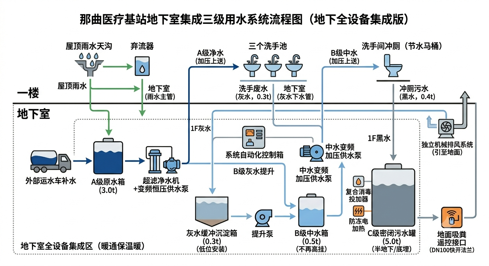
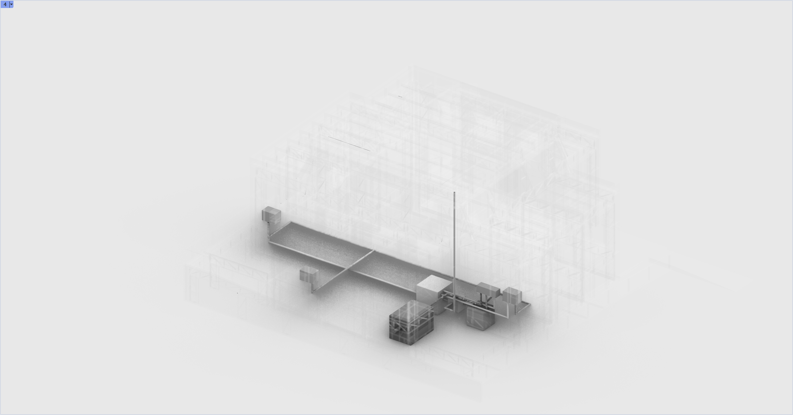

能源系统 + 水循环系统 · 在无电网无市政管网条件下实现自循环
本套能源系统设计针对那曲极寒无网环境，借鉴 Solark5.0 成功案例，在地下室 9m × 9m 空间内集成 384 吨高密度固体蓄热转能矩阵（128m³）。 利用白天屋顶太阳能光伏发电强加热至 500°C，可高效率储存 48 万度电等量热能； 夜间或极寒时段通过中央风机与混风阀调节，向一楼及洗手间输送舒适热风采暖，并同步提供无菌医疗热水 与全站防冻热源。全系统无一滴水参与蓄热、零冻结风险、长寿命且免日常维护，是基站自主高坪效的生命线能源核心。
针对西藏那曲市高海拔极寒地区、无市政给水管网接入的 200 平方米小型医疗基站进行给排水设计。 系统采用 2-3 人常驻规模，集成雨水收集与三级用水（中水回用）技术，并将全部设备集成于地下室， 实现防冻保暖、零能耗下排水以及按需加压上供水。
结合那曲当地极端气候，对常驻医护及流动患者进行用水定额计算。系统总给水量设计基准定为 10 m³/d， 实际每日产生污水量（需外运）约 0.63 m³/d。该方案的核心思想是极致地利用空间、分级提高效率、简化维护程序。 针对那曲市高海拔、极寒、无城市自来水管网的极端环境，设计了一套集成了夏季雨水收集、三级中水回用的地下室一体化水务系统。
为最大化节约高原运水成本，系统对水资源进行精确的"灰黑分离"与循环利用：
外部运水车补水与夏季屋顶收集雨水汇入，经超滤及紫外线杀菌后供日常饮用、配药、洗手及保洁。
一楼洗手池及擦拭废水经独立灰水管重力流至地下室，经过滤沉淀及消毒后进入中水箱，专门用于马桶冲厕。马桶冲厕所需的 420 L/h 完全由灰水循环提供，实现一楼原水节约近 36%。
冲厕后的重污染黑水直接重力下排至地下室密闭储罐，经高级消毒后定期由吸粪车外运。

那曲医疗基站给排水与三级用水系统设计 · 地下全设备集成版

水处理设备实物连接 · 现场建造过程记录
| 用水项目 | 设计标准 | 计算基数 | 日用水量 |
|---|---|---|---|
| 常驻医护生活 | 80 L/人·日 | 3 人 | 240 L |
| 门诊患者卫生 | 10 L/人·次 | 15 人/日 | 150 L |
| 医疗洗手池冲洗 | 15 L/个·日 | 3 个 | 45 L |
| 地面与医疗擦拭 | 1.5 L/m²·日 | 200 m² | 300 L |
| 洗手间马桶冲厕 | 3.5 L/次 | 120 次/日 | 420 L |
| 设备 | 规格 | 数量 | 价格(¥) |
|---|---|---|---|
| A 级蓄水箱 | 1.5×1.5×1.5 m³ | 1 | 4,500 |
| 一体化超滤净水机 | 0.6×0.4×1.2 m | 1 | 12,000 |
| 灰水缓冲沉淀桶 | 0.8×0.5×0.8 m | 1 | 3,200 |
| B 级中水蓄水箱 | 1.0×0.5×1.0 m³ | 1 | 2,800 |
| 屋顶雨水收集筒 | Φ0.11×1.6 m | 1 | 1,500 |
| C 级污水密闭储罐 | 2.2×1.5×1.5 m³ | 1 | 15,000 |
| 二氧化氯发生器 | 0.5×0.3×0.6 m | 1 | 6,500 |
| 系统自动控制器 | 0.4×0.2×0.6 m | 1 | 4,500 |